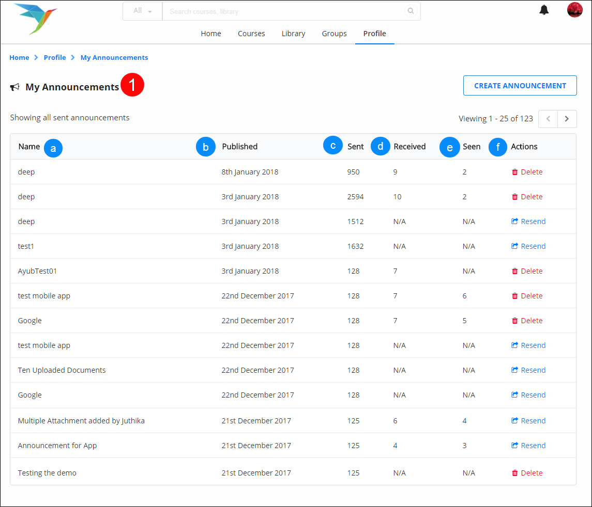
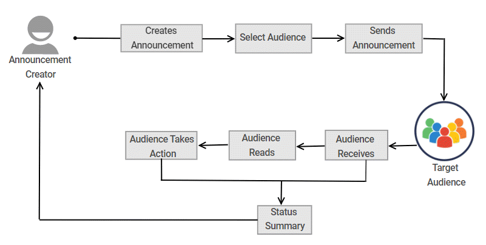

Adding Resources
Contribution Guidelines Edit | Report
Contents[hide] |
Resources refers to the stock of content that is available on Sunbird. Content creators can use content from
the existing list or create resources. Four types of resources are available (and can be created) on Sunbird:
1. Study Material
2. Activities
3. Tests
4. Worksheets
This document explains the procedure of adding published resources. Resources can be added to book, course, collection, study material, or lesson plan.
Adding Resources to Headings
Resources are added to each heading created in the ToC pane. To add resources to headings:
| Step | Screen |
|---|---|
| a. Click Add Resource from the burger menu associated with the required node in the left navigation pane, OR
b. Right-click on the node name and select Add Resource, OR c. Click Add Resources button in the action pane, OR d. Click Add on the resource card on the left pane, OR e. Use the keyboard shortcut Ctrl+Alt+A. For more details on keyboard shortcuts, refer Keyboard Shortcuts |
 |
Adding Resources
| Step | Screen |
|---|---|
| On clicking Add Resource, the Find & Select Activities page is displayed
1. Type keywords to search for resources. Note: On entering three characters, you see content titles as suggestions 2. Sort resource displays alphabetically or based on published date 3. For an effective search, select from the following drop-down filters: a. Category b. Language c. Class d. Subject e. Concepts 4. Click Clear All to edit and reset the filters 5. Click Apply 6. Select the content you want to add 7. Click Proceed 8. Click Back to go back to the previous screen |
Viewing Selected Resources
| Step | Screen |
|---|---|
| Hover over the resource card to view concise content details
1. Click View Details on the resource card to view all the details, OR 2. Click View to view all the details |
 |
Adding Resources
| Step | Screen |
|---|---|
| 1. Search for the resource using the search bar
2. Select the relevant resource cards from the available list 3. Hover over the card to view the details about that resource 4. Click View Details to see resource information in a new window a. Click Add to add the selected resource to the TOC b. Click Remove to remove the resource 5. Click Proceed to add resources to the section. The resource is added to the Resource pane of the node |
Previewing Resources
| Step | Screen |
|---|---|
| After adding the resource, preview the resource content from the action pane
1. Click the Play icon to load the content of the resource 2. You can remove the resource from the list using Delete icon 3. Click Save to save the changes 4. Click Send for Review icon to send the lesson plan for review. Note: For details, refer Send for Review The Resource page displays the Name, Description, and Keywords related to the resource. 1. Click the play icon to load the added resource 2. You can delete the resource using Remove icon 3. Click the link in the breadcrumb to visit the corresponding lesson plan 3. Click Save to save the changes |